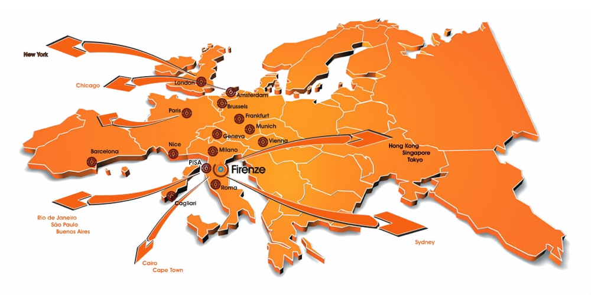

Accommodation & Travel
ACCOMMODATION
Destination Florence for Events is the official conference reservation system of Florence, realized by the Organizing Secretariat and Firenze Convention Bureau, used by National and International Associations to offer their conference attendees a safe and convenient way to book their stay in Florence.
Thanks to the numerous partnerships and premium relationships with the most hotels of the city, it is able to guarantee the best available room rates and reservation policies.
July and August are high season months in Florence and the city is full of tourists. Therefore, it is strongly recommended to book your accommodation well in advance.
ACL and the Organizing Secretariat have partnered with Firenze Convention Bureau to provide all conference participants the best available rates and reservation policies during the event.
CONFERENCE CARD
Please download your ACL 2019 CARD (it provides special offers and discounted fees at museums, historical sites, shops, restaurants, wellness centers, golf clubs, bike rental stands, car rental agencies, sightseeing tours, taxis, and airport transfer with private driver) here:
HOW TO GET TO FLORENCE
Florence is well connected to the rest of Italy and Europe by land and air transport.
Over recent years there has been a considerable increase in air traffic through Amerigo Vespucci airport which has been constantly renovated as have its services.
Florence is also a central hub for Italy’s railway network and the station is easily reached from the main cities in the North and is approximately one hour and a half’s train ride from Rome. The high speed train service (TAV) project is now well underway on the Bologna-Florence section.
The national A1 motorway, the main motorway linking the north and south of Italy, has four exits around the city (Firenze Nord, Firenze Scandicci, Firenze Impruneta and Firenze Sud).

By plane
The Amerigo Vespucci Airport is situated on the north-west outskirts of Florence, 5 kilometres from the city centre and can be reached in approximately 15/20 minutes by taxi or the Ataf/Sita shuttle bus.
Pisa's Galileo Galilei Airport is located at approximately 80 kilometres from Florence. It can be reached with direct flights from the most important European and Italian airports. It is connected to Florence with a direct train service to Florence Santa Maria Novella railway station and a bus service. The journey takes around one hour and twenty minutes.
Bologna's Guglielmo Marconi Airport is situated 7 kilometers from the city centre of Bologna and just 35 minutes by train (Trenitalia or Italo high speed trains).
By train
The main railway station in Florence is the Santa Maria Novella station. This is located in the city centre, right next to the main tourist sites. Immediately in front of the station is the most important stop for all public buses serving the inner city and outside the city. The second railway station in Florence is Firenze Campo Marte, which is becoming more and more used for specific national and international trains.
By car
The main tourist area in the city centre is part of the ZTL area, that is a limited traffic zone, which is controlled by short circuit cameras. If you have to reach booked accommodation (hotel, etc.) please remember to get information from the hotel, so that your car details may be passed on to the municipal police.
Distance
The conference venue is just in the heart of Florence: walking distance from all city center hotels, museums and historical monuments.
- 5 kilometers from the airport (15 minutes by car)
- 1 minute from the city’s main train station
A new tramway system is now available in Florence, with a stop just in front of the 'Fortezza da Basso': please click here to get more information.